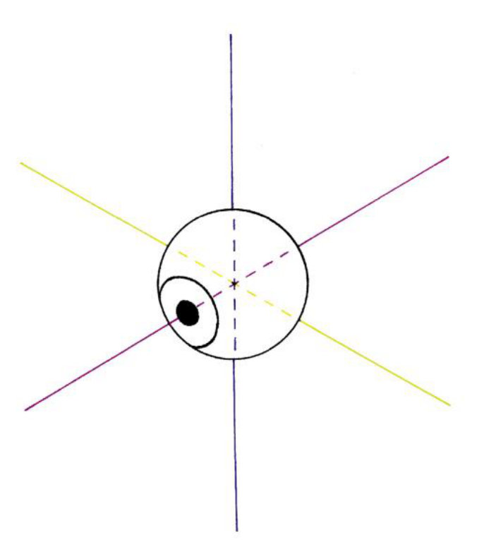
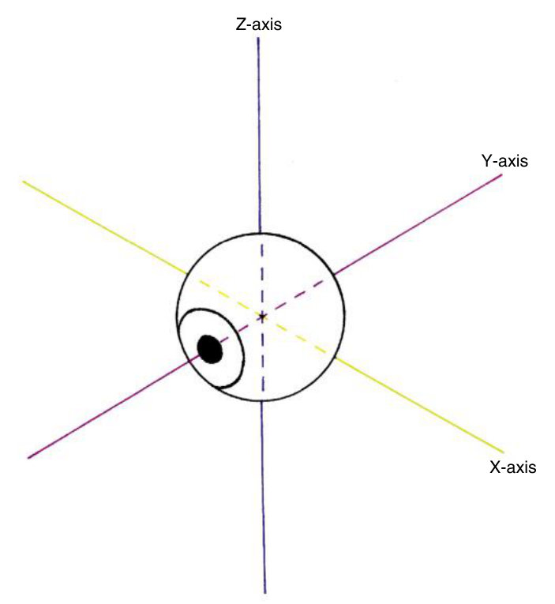
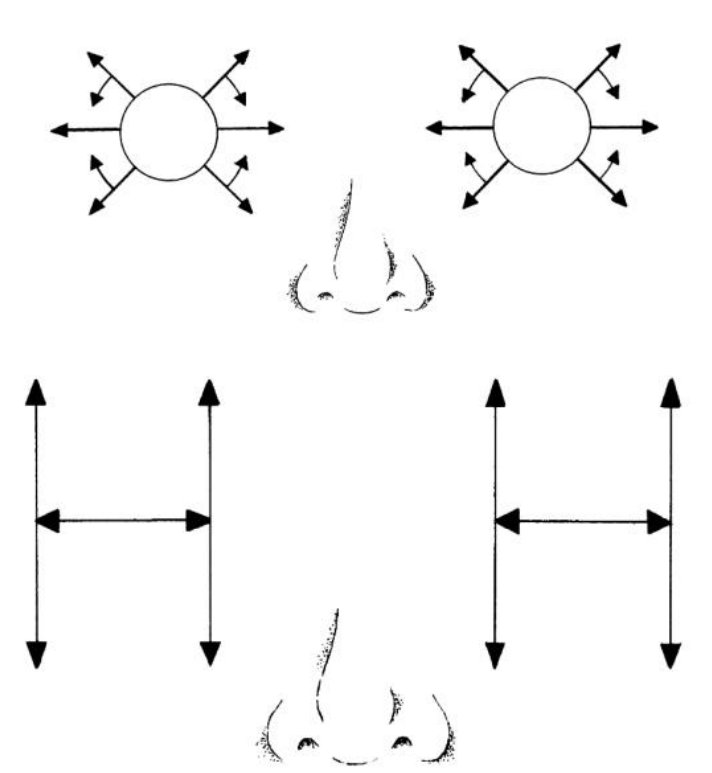
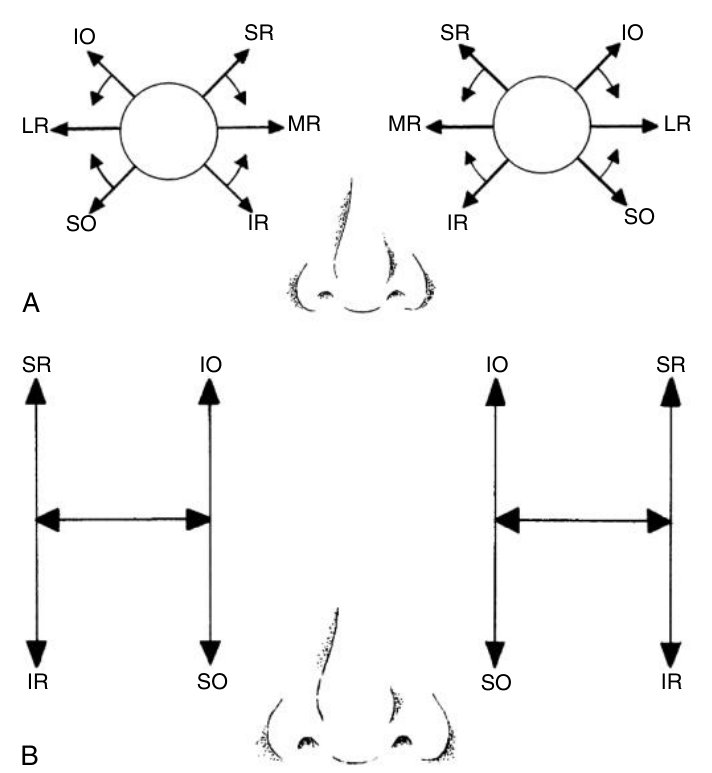
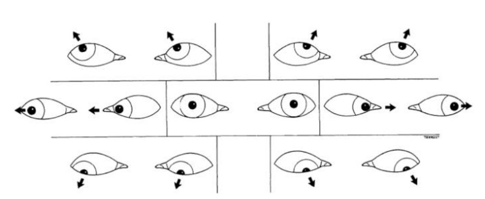
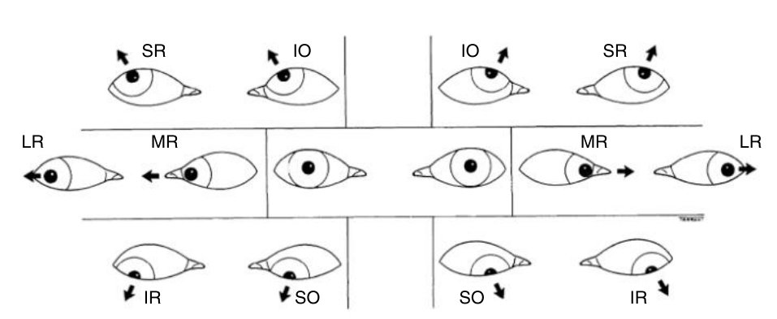

From a gaze position to the broken muscle
One rule drives the whole clinical half of this chapter: abducted eye → vertical rectus · adducted eye → oblique.
Given any gaze direction and a failing eye, name the dysfunctional muscle and its nerve — and name the yoke muscle doing the same job in the other eye.
Six objectives: the origin and insertion of each muscle · the nerves that innervate each · the primary and secondary actions of each · muscle movements from a secondary to a tertiary position, and use this to determine the dysfunctional muscle · which muscles are agonist and antagonist about each of Fick's axes · the yoke muscles for each secondary and tertiary movement.
Your note beside them — "which one is dysfunctional? X, Y, Z" — means expect cases, not lists.
Exam guidelines · p. 5 · Your notes
1. The master table — cover the right-hand columns
| Muscle | Origin | Insertion | Nerve | Primary | Secondary |
|---|---|---|---|---|---|
| Medial rectus | common tendinous ring + optic nerve sheath | anterior globe, medial | CN III inferior | adduction | — |
| Lateral rectus | ring + spina recti lateralis | anterior globe, lateral | CN VI | abduction | — |
| Superior rectus | ring (upper limb) + optic nerve sheath | superior anterior globe | CN III superior | elevation | adduction, intorsion |
| Inferior rectus | ring (lower limb) | inferior anterior globe | CN III inferior | depression | adduction, extorsion |
| Superior oblique | lesser wing of sphenoid — physiologically the trochlea | superior posterior lateral globe | CN IV | intorsion | depression, abduction |
| Inferior oblique | maxilla, front of the orbital floor | inferior posterior lateral globe | CN III inferior | extorsion | elevation, abduction |
Nerves in six characters: LR6 · SO4 · rest III, and of the CN III muscles only the SR takes the superior division.
The recti adduct (SR, IR, MR); the obliques abduct. Superior muscles intort (SR, SO); inferior muscles extort (IR, IO). The obliques do the opposite vertical job to their name: SO depresses, IO elevates. And MR and LR have only one action each, because they lie parallel to the sagittal axis.
TB 11 · p. 184, Table 11.5
Two insertion facts worth a mark: the recti insert in front of the equator on a spiral — MR 5.5 → IR 6.2 → LR 6.6 → SR 7.2 mm from the limbus, the spiral of Tillaux. And MR and SR attach to the optic nerve sheath, which is why eye movement hurts in retrobulbar optic neuritis.
TB 11 · p. 179–182
2. Fick's axes — the handout says DRAW
| Axis | Runs | Movements |
|---|---|---|
| X | horizontal, nasal → temporal | elevation · depression |
| Y | sagittal, anterior pole → posterior pole | intorsion · extorsion |
| Z | vertical, superior → inferior | adduction · abduction |
All three cross at the centre of rotation, about 13.5 mm behind the cornea. Secondary position = rotation about one axis (straight right, left, up, down). Tertiary = about two (the four oblique directions).

Answer: Fig. 11.14 with labels

Vertical line: Z axis (adduction / abduction). The line through the cornea and the back of the eye: Y axis (intorsion / extorsion). Side to side: X axis (elevation / depression).
3. Why the position changes the muscle
When the eye turns, each muscle's plane of pull swings relative to the axes. A muscle whose plane lies parallel to the Y axis acts purely vertically; one whose plane is perpendicular to it cannot act vertically at all.
| Eye abducted | Eye adducted | |
|---|---|---|
| Vertical recti (SR, IR) | at 23°: pure elevation / depression, no torsion | at ~67°: cannot elevate or depress |
| Obliques (SO, IO) | at 35–39°: cannot elevate or depress | at 51–55°: SO only depresses, IO only elevates |
The more the eye abducts, the more the vertical recti raise and lower it. The more it adducts, the more the obliques do. So in any oblique gaze: the eye looking out uses its rectus, the eye looking in uses its oblique.
TB 11 · p. 185–188
4. Finding the broken muscle
Start in primary position: an inactive muscle lets its antagonist pull the eye over. An eye turned toward the nose means an underactive LR. Then test motility with a small target, putting the eye where one muscle is the main actor.
| The eye cannot… | …in this position | Dysfunctional muscle | Nerve |
|---|---|---|---|
| abduct | horizontal | lateral rectus | CN VI |
| adduct | horizontal | medial rectus | CN III |
| elevate | abducted | superior rectus | CN III (superior) |
| depress | abducted | inferior rectus | CN III |
| elevate | adducted | inferior oblique | CN III |
| depress | adducted | superior oblique | CN IV |

The nose between the eyes tells you that you are facing the patient — so the eye on your left is their right. On each H, the outer arm is the abducted side (SR up, IR down) and the inner arm is the adducted side (IO up, SO down).
Answer: Fig. 11.22 with labels

A, patient's right eye: IO up-out · SR up-in · LR out · MR in · SO down-out · IR down-in. B, each H: temporal arm SR above, IR below; nasal arm IO above, SO below.
5. Agonists and antagonists, axis by axis
| Movement | Agonists | Antagonists |
|---|---|---|
| Adduction (Z) | MR + SR + IR | LR + SO + IO |
| Abduction (Z) | LR + SO + IO | MR + SR + IR |
| Elevation (X) | SR + IO | IR + SO |
| Depression (X) | IR + SO | SR + IO |
| Intorsion (Y) | SO + SR | IO + IR |
| Extorsion (Y) | IO + IR | SO + SR |
The point of the objective is that the same pair can be agonists about one axis and antagonists about another. SR + IO both elevate (agonists on X), but SR intorts and adducts while IO extorts and abducts (antagonists on Y and Z) — so the side effects cancel and you get pure elevation. IR + SO do the same for pure depression.
Sherrington's law, one eye: a muscle contracts while its antagonist relaxes proportionally.
TB 11 · p. 184, 188 · Handout 9 · p. 14
6. Yoke muscles
Hering's law, two eyes: innervation to the yoke muscles is equal and simultaneous. Do not mix the two laws up — Sherrington is within one eye, Hering is across both.
| Gaze | Right eye | Left eye |
|---|---|---|
| Right | LR | MR |
| Up and right | SR | IO |
| Down and right | IR | SO |
| Up and left | IO | SR |
| Down and left | SO | IR |
| Convergence | MR | MR |
You never need to memorise this table: build any pair from the rule — the abducting eye uses its rectus, the adducting eye uses its oblique, and both do the same vertical job.

Answer: Fig. 11.23 with labels

Patient's right gaze: up R SR + L IO · across R LR + L MR · down R IR + L SO. Patient's left gaze: up R IO + L SR · across R MR + L LR · down R SO + L IR.
Spiral of Tillaux 5.5 · 6.2 · 6.6 · 7.2 mm · tendons: LR 8.8 mm (longest rectus), MR 3.7, SO 2.5 cm, IO 1 mm · angles to the sagittal axis: SR and IR 23°, SO 55°, IO 51° · pure vertical: recti at 23° abduction, obliques at 51–55° adduction · centre of rotation 13.5 mm behind the cornea.
7. Drill
More: Mixed quiz — Chapter 9 · pictures only: Image quiz — Chapter 9.
Read study script § chapter 9, sections 6–9, then Handout 9 pages 13–14. Practice by naming a random gaze direction out loud and answering both questions — broken muscle, yoke pair — before you look anything up.
Ask your teacher — "why does the SO depress when it is called superior?", "give me ten gaze cases and mark me", "explain the 23° and 51–55° numbers once more".